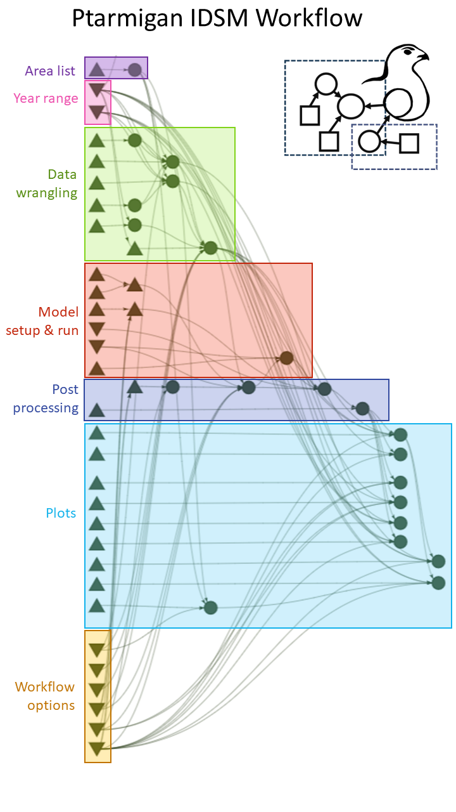
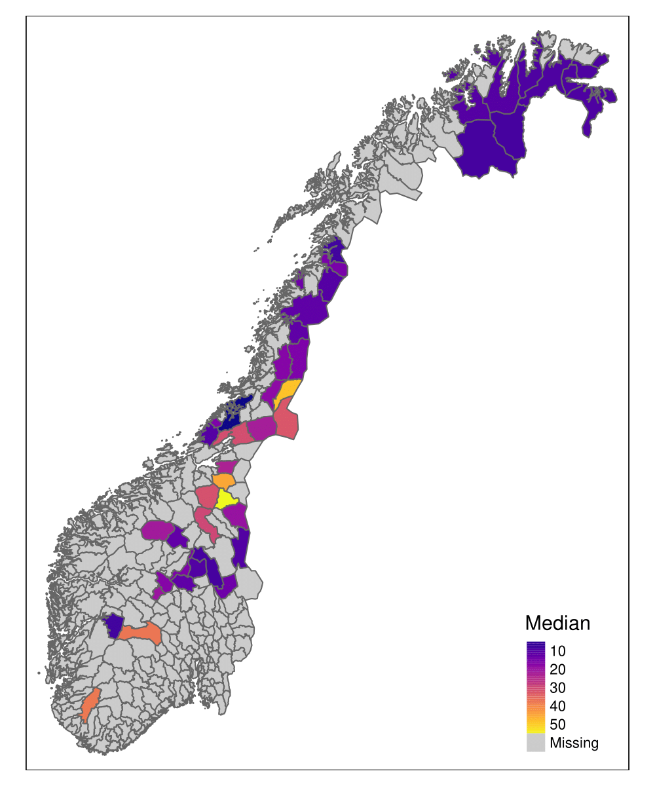
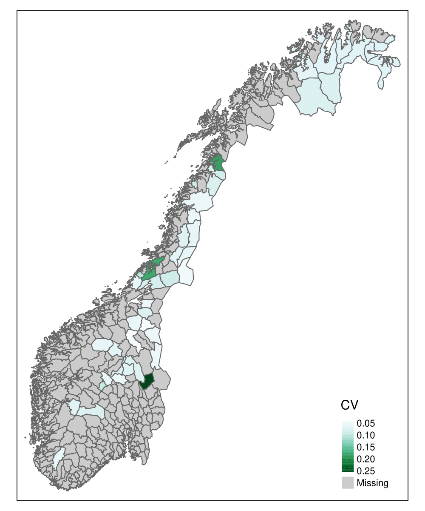
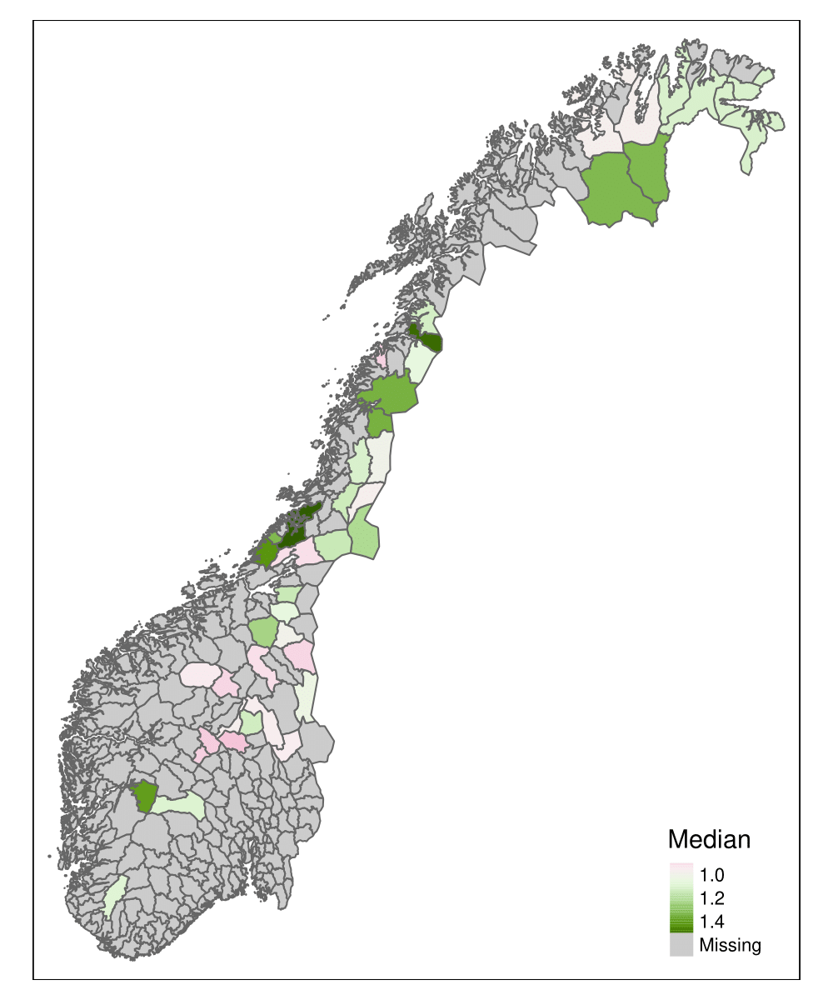
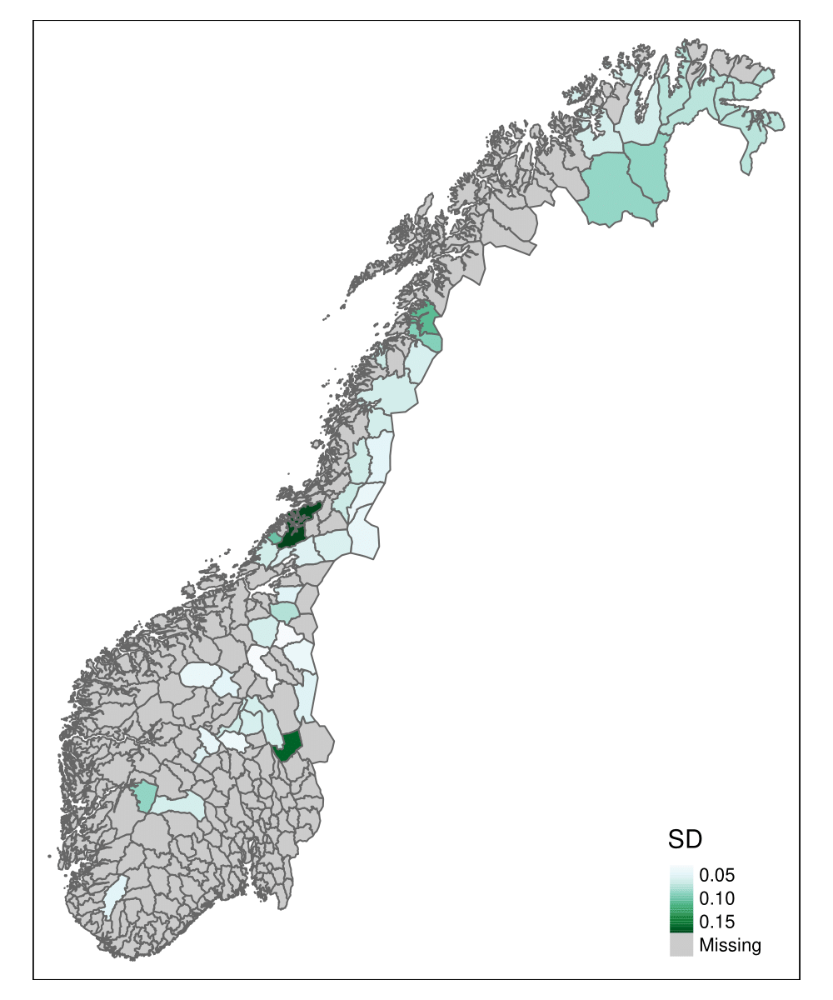
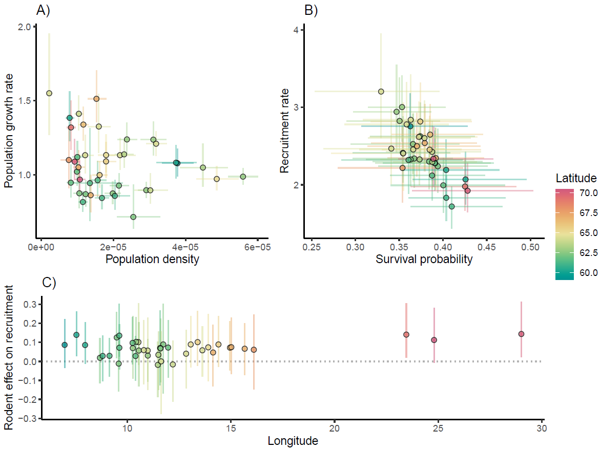
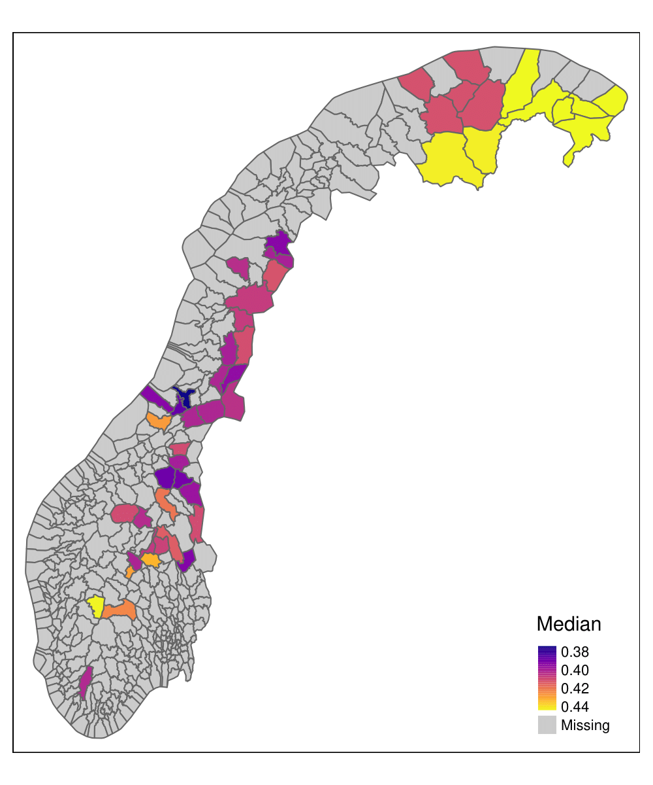
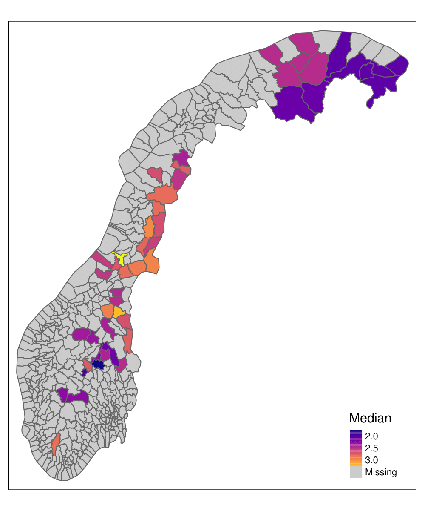
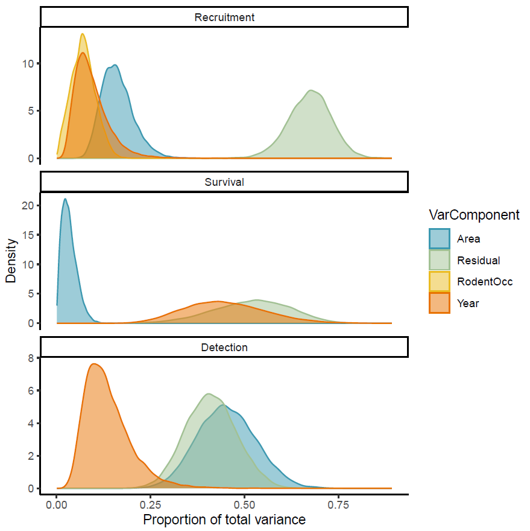

Large-scale spatiotemporal variation in vital rates and population dynamics of an alpine bird
Abstract
TBA
Introduction
There is growing demand for biodiversity indicators from international unions, national government, local management bodies, and corporate and industry actors. Such indicators ideally represent a wide range of biodiversity’s states and functions (e.g. Essential Biodiversity Variables, Pereira et al. 2013; Jetz et al. 2019), yet the development of suitable indicators for certain qualities, such as species abundance and demography, has been more difficult than for others (Schmeller et al. 2018; Waldock et al. 2022). This is at least partially due to challenging requirements regarding spatial scales of useful biodiversity indicators. On one hand, indicators need to be representative at large geographic scales, for example, in the context of countries’ reporting towards biodiversity targets (e.g. Feld et al. 2009). On the other hand, indicators also ideally have good spatial resolution as the scales relevant for local-level management and planning are often much smaller (Stevenson et al. 2021). This latter requirement is particularly crucial for (infrastructure) development strategies and for species management and conservation, both of which tend to require knowledge on species abundance and population dynamics (i.e. demographic rates) that is relevant for their county- or municipality-level decision making (+ refs?). Another reason why abundance and population indicators ideally come with good spatial resolution is that there can be substantial amounts of variation in population dynamics and life history of species across space (e.g. Robinson, Morrison, and Baillie 2014; Horswill et al. 2019). This is variation that needs to be accounted for in order to develop successful and sustainable strategies for area use, (harvest) management, and species and biodiversity conservation (Williams, Nichols, and Conroy 2002).
While large-scale, spatially-explicit indicators for species abundance and populations are clearly needed, development and practical implementation are greatly limited due to the reliance of such indicators on the availability of data from large-scale, long-term monitoring programmes (Proença et al. 2017). Consequently, many countries have been working on setting up, maintaining, and improving such monitoring programmes over the last decades. Many now well-established programmes focus on breeding birds and butterflies, and examples include the North American Breeding Bird Survey (https://www.pwrc.usgs.gov/bbs/), UK Butterfly Monitoring Scheme (https://ukbms.org/), Swiss Biodiversity Monitoring (https://www.biodiversitymonitoring.ch/), and many more.
There is a natural trade-off between quality and quantity of data that can be collected in any monitoring programme: collecting high quality data in a structured manner is costly and requires trained specialists, thus limiting the amount of data that can be collected, while participatory monitoring, i.e. the collection of ecological data by members of the public (also called citizen science, Fraisl et al. 2022), allows to greatly reduce costs and extend spatial and taxonomic scales of monitoring at the expense of data quality and risk of bias (Johnston, Matechou, and Dennis 2023). Consequently, many large-scale monitoring programmes are often limited to presence-absence or very simple count observations, making them suitable for the development of indicators of distribution and population trends, but usually not for indicators of abundance, population dynamics, and demographic rates (+ example refs). The exception here are monitoring programmes that succeed in making use of a large number of citizen scientists that have been trained to collect data and record metadata in a structured manner and according to a carefully designed protocol. In Norway there is a monitoring programme for terrestrial game bird species called “Hønsefuglportalen” (= “game bird portal”, https://honsefugl.nina.no/Innsyn/en). It is a line transect survey programme carried out annually in >120 localities across the country (>2000 transects) by trained volunteers using pointing dogs. The programme has a well developed protocol for recording bird observations, auxiliary data, and relevant metadata (+ref to protocol?) and established routines for quality control and annual releases of publicly available data via GBIF. As such, it is particularly well suited to become part of a workflow for producing and updating abundance and population indicators on an annual basis.
The line transect data from “Hønsefuglportalen” has been used previously for estimating abundance trends of willow ptarmigan (Lagopus lagopus) across Norway (e.g. Diana E. Bowler et al. 2020; Nilsen and Rød-Eriksen 2020) but large-scale estimation of demographic rates underlying these trends has thus far remained as untapped potential of the dataset. Nilsen and Nater (2023) recently developed a novel integrated distance sampling model (IDSM) which successfully uses age information in line transect data alongside radio-telemetry data to estimate not just abundance, but also survival and recruitment across years. In this study, we adapt the model of Nilsen and Nater (2023) to run not just on a single site but on all areas with publicly available line transect data from “Hønsefuglportalen” simultaneously. Unlike several previous studies applying integrated models for population dynamics to multiple (sub-) populations separately and comparing results (e.g. Robinson, Morrison, and Baillie 2014; Nater et al. 2023), we opt for an approach explicitly integrating across space, thus allowing for sharing of information across locations and – in effect – space-for-time substitution (e.g. Horswill et al. 2019; Morrison et al. 2022). We then apply the resulting multi-area IDSM to “Hønsefuglportalen” data on willow ptarmigan to estimate population size, age-structure, survival, recruitment, and impacts of small rodent abundance across 41 reporting districts and 15 years (2007-2021) for this popular small-game species. We further embed the modelling workflow in a reproducible, semi-automated pipeline that will greatly facilitate the repeated calculation of abundance and population indicators at different spatial scales as new data is added every year.
Methods
Study species
The willow ptarmigan (Lagopus lagopus) is a tetraoid bird with a circumpolar distribution, mainly inhabiting sub-alpine and arctic ecosystems (see e.g. Fuglei et al. 2020). While the species is currently listed as Least Concern (LC) both in the global and Norwegian Red List of Species, it has undergone rather dramatic declines in abundance in Norway since the turn of the 20th century (Hjeljord and Loe 2022). While the main reason for the long-term decline in abundance remain unresolved, willow ptarmigan are considered sentinel species that are sensitive to both climate change and land use changes (Henden et al. 2017; Storch 2007). Moreover, being one of only a handful of bird species that spend the winter in mountain ecosystems in Scandinavia, they are important components of the ecosystem as prey species for the gyrfalcon (Franke et al. 2020) . The willow ptarmigan has a relatively fast pace of life (Sandercock, Martin, and Hannon 2005; H. Steen and Erikstad 1996), and can display substantial spatio-temporal variation in demographic rates (D. E. Bowler et al. 2020). Their population dynamics are characterized by large inter-annual fluctuations in abundance (Hjeljord and Loe 2022), and previous research has tied these fluctuations to rodent cycle through shared predators (Hagen 1952; D. E. Bowler et al. 2020). This tight relationship between the breeding success of ground nesting birds and the rodent cycle is known as the Alternative Prey Hypothesis and has been a central part of Fennoscandian research on grouse population dynamics for many decades J. B. Steen et al. (1988). In addition, spring weather conditions and phenology is known to have considerable effects on breeding success and recruitment rates J. B. Steen et al. (1988). Across their distributional range, they are iconic species with a high cultural value, partly linked to their popularity as game species. The latter means that information about spatio-temporal variation in demographic rates and population dynamics is particularly important in order to design sustainable harvest strategies. In addition, as a sentinel species the willow ptarmigan is well suited as an indicator species for ecosystem status; in Norway it is included in both the main national biodiversity (Nature Index for Norway, Jakobsson and Pedersen 2020, https://www.naturindeks.no/Indicators/lirype) and ecosystem (Assessment of the Ecological Condition, Framstad et al. 2022) assessments.
Data collection, management, and preparation
Line transect sampling
The line transect survey data were collected through a structured participatory monitoring program called “Hønsefuglportalen” (https://honsefugl.nina.no/Innsyn/en). In August each year, trained volunteer fieldworkers collect observations of willow ptarmigan and other grouse species (rock ptarmigan Lagopus muta, black grouse Lyrurus tetrix, capercaillie Tetrao urogallus) along predefined line transects. To increase the detection probability, each team of fieldworkers use a pointing dog to locate the birds. Each survey team typically consist of at least two persons (one dog handler and one person responsible for following the transect line) and one dog. Often, more than one dog is used for a survey, but only one dog should be used at a time. The transect lines vary in length, but are typically between 1 and 8 km (range: 0.3-16.2 km, median: 3 km). When birds are observed, the exact location of observation is noted, along with its perpendicular distance from the transect line, as well as the age and sex of the birds. An observation typically includes 1 - 12 birds (mean = 5.6), with groups > 1 typically representing one brood (female and or male with young-of-the-year chicks). When the surveys are conducted in August, the chicks of the year are able to fly but can be distinguished from older birds as they are still of smaller body size. Since 2019, most of the data has been collected using a mobile app tailored made for the monitoring program, where the field workers can register and get access to the transect lines allocated to them by the local organizers. Prior to 2019, data were collected on a dedicated fieldwork form, and entered manually in a web portal afterwards. After field data has been registered, it undergoes several steps of quality control carried out by local stakeholders and personnel from the Norwegian Institute for Nature Research (NINA). Surveys are carried out on both public and private land. After an initial embargo period, all data from public land are published and made freely available as a sampling-event data set on GBIF (refs). The published datasets contain both metadata about the transect surveys (survey date, line transect length and location, study area ID, etc.) as well as bird observation data (species, number of birds of different categories (adult males, adult females, juveniles, and birds of unknown category), perpendicular distance to transect line, exact location, and time of observation). Formally, the data from public land is published as three distinct data sets, one for each of the main public land administrators (Statskog, FeFo and Fjellstyrene, respectively).
Notably, the program is not designed as a centralized national monitoring programme, but rather a collection of local and regional survey programs. All involved survey areas use a common field protocol and data collection model. In addition, the local study designs are reviewed by staff at NINA, and common recommendations for study design are provided. However, due to the fact that participation by stakeholders is voluntary, the spatial distribution of transects and sampling effort is not homogeneous. In general, the effort is higher in South-Eastern and Central Norway, medium in Northern Norway, and low in Western and Southern Norway.
In this study we used all publicly available data for the period 2007-2021, which included a total of 2225 transects in 41 different reporting districts spanning 9 counties and 50 municipalities. Transects on which no willow ptarmigan were ever observed (i.e. species absence likely due to low habitat suitability) were dropped, resulting in 2077 transects used in the analyses.
Radio-telemetry study in Lierne
The model of Nilsen and Nater (2023) integrated line transect data with radio-telemetry data from from an ongoing field study of marked willow ptarmigans in Lierne municipality in Central Norway. From 2015 to 2019, around 50 birds were captured in winter (late February or early March) each year and fitted with VHF collars. The marked birds were then monitored on a regular basis until they either i) died, ii) their transmitter’s battery stopped working, or iii) we lost contact with the bird for other reasons. For most of the year, the birds were monitored at least once a month. During the breeding and chick-rearing season (May to July) birds were monitored more often, and during December and January we obtained few observations due to challenging field work conditions. A proportion of the birds were harvest annually in the regular recreational harvest, and birds that were harvested were reported as shot to the field personnel. In addition, as the collars had mortality switch, we were also able to locate and retrieve a high proportion of birds that died for natural causes, resulting in a known-fate mark-recapture dataset. The radio-telemetry study is described in detail in Israelsen et al. (2020) and in Arnekleiv et al. (2022).
In this study we used data from years 2015 - 2020, and the total sample size across these years was 139 birds for the Aug-Jan period and 258 birds for the Feb-Jul period.
National-scale integrated model
Integrated distance sampling model (IDSM) for willow ptarmigan
Nilsen and Nater (2023) recently developed an integrated distance sampling model (IDSM) which jointly analyses line transect and radio-telemetry data and applied it to willow ptarmigan in the Western part of Lierne municipality in Norway. The model consists of a deterministic population model with two age classes (juveniles and adults) and four data likelihoods: 1) likelihood for observation distances from transect lines for estimating detection probability; 2) likelihood for age-specific counts on transect surveys for estimating numbers of juveniles and adults present; 3) likelihood for juvenile to adult ratios observed at the locality level to provide estimate recruitment rate (as juveniles/adult); and 4) likelihood for known-fate telemetry data to estimate seasonal and annual survival. Below, we describe our new extension of this model to include data from several as opposed to just one. For more detailed information on the single-site model, including tests of model performance, see Nilsen and Nater (2023).
Multi-area model extension
For applying the ptarmigan IDSM across all 41 reporting districts we included an area index in all model parameters (Figure 1) and enabled sharing of information among areas by explicitly modelling spatial variation alongside shared temporal and residual variation in vital rates and detection parameters.
The spatially-explicit formulation of the two age-class population model can be written as:
\[ \begin{aligned} D_{juv, x, j, t+1} & = D_{ad, x, j, t+1} * R_{x, t+1} \\ D_{ad, x, j, t+1} & = S_{x, t} * (D_{juv, x, j, t} + D_{ad, x, j, t}) \end{aligned} \]
Here, \(D_{juv, j, x, t}\) and \(D_{ad, j, x, t}\) are the densities of juvenile and adult ptarmigan in survey site (= transect) \(j\) of area \(x\) in year \(t\), respectively. Both juveniles and adult survive from year \(t\) to \(t+1\) with an area- (\(x\)) and year- (\(t\)) specific survival probability \(S_{x, t}\), and survivors produce the next generation of juveniles according to an area- and year-specific recruitment rate (\(R_{x,t}\)).

The initial densities, \(D_{juv, x, j, 1}\) and \(D_{ad, x, j, 1}\) are modelled for each site (= transect) as random realizations of log normal distributions with area-specific log means (\(\mu^{D1}_x\)) and log standard deviations (\(\sigma^{D1}_x\)). Survival (\(S_{x,t}\)) and recruitment (\(R_{x,t}\)), on the other hand, are assumed to be the same for all sites \(j\) within a given area \(x\) and were modelled as:
\[ \begin{aligned} logit(S_{x, t}) & = logit(\mu^S) + \varepsilon^{X.S}_{x} + \varepsilon^{T.S}_{t} + \varepsilon^{R.S}_{x,t} \\ log(R_{x, t}) & = log(\mu^R) + \beta_x*rodentOcc_{x,t} + \varepsilon^{X.R}_{x} + \varepsilon^{T.R}_{t} + \varepsilon^{R.R}_{x,t} \end{aligned} \] The global means ,\(\mu\), and the normally distributed spatial random effects, \(\varepsilon^X\), represent the equivalent of what is elsewhere referred to as “hyper-parameter distributions” for sharing information on demographic rates across areas (e.g. Horswill et al. 2019, 2021). We also used this same approach for defining the area-specific effects (\(\beta_x\)) of local yearly rodent occupancy (\(rodentOcc_{x,t}\)) on recruitment. In addition to spatial variation in survival and recruitment, we also included large-scale temporal variation through random year effects that were shared by across all areas (\(\varepsilon^T_t\)) and otherwise unaccounted for variation through year- and area-specific residual random effects (\(\varepsilon^R_{x,t}\)). Spatial, temporal, and residual random effects were modelled as normally distributed with globally defined (= shared) standard deviations.
The three likelihoods for data resulting from the line transect sampling (observation distances, age-specific counts, and juvenile to adult ratios, see above) were also formulated as spatially explicit, with year- and area-specific distance sampling detection parameters modelled in the same way as survival and recruitment (bar the effect of rodent occupancy, Figure 1). For the known-fate telemetry data (and the seasonal decomposition of survival estimated from it), on the other hand, we did not add an additional area dimension as this data was only available for the Lierne area.
Model implementation
We implemented our multi-area IDSM in a Bayesian framework using NIMBLE version 1.0.1 (Valpine et al. 2017) in R version 4.3.1 (R2023?). For the likelihood for line transect observation distances we used a custom half-normal distribution developed by Michael Scroggie in the “nimbleDistance” package (https://github.com/scrogster/nimbleDistance). We used non-informative uniform priors for all parameters and including biologically sensible boundaries where possible. We simulated complete sets of initial values for all model nodes prior to model running and using pre-defined seeds to ensure reproducibility. Using NIMBLE’s standard samplers, we then ran 4 MCMC chains of 100k iterations each. We discarded the first 40k samples of each chain as burn-in, and thinned the remainder by a factor 20, resulting in a final joint posterior containing a total of 4 x 3k = 120k samples (note that high thinning rates were necessary to constrain memory load of the joint posterior, which included 314568 monitored parameters).
Post-hoc variance decomposition
Following model fitting, we calculated posterior distributions for the proportions of variance in survival probabilities, recruitment rates, and detection decay explained by 1) spatial variation (\(var_{area}\)), 2) temporal variation (\(var_{year}\)), 3) residual variation (\(var_{residual}\)), and 4) variation in rodent occupancy (\(var_{rodent}\)). To obtain the proportion variance explained by each of the component, we divided it by the sum of all other components (\(var_{area} + var_{year} + var_{residual} + var_{rodent}\)). The spatial, temporal, and residual variance components were defined as the square of the estimated corresponding random effects standard deviation from the model while \(var_{rodent}\) was calculated as the variance of all area- and year-specific \(\beta_x*rodentOcc_{x,t}\) products.
Reproducible workflow with “targets”
Reproducibility and ease of repeating analyses was a key focus when developing the multi-area IDSM.To that end, we set up the workflow as a “targets pipeline”, implemented through the R package “targets” (Landau 2021). The pipeline contains a variety of options for controlling modelling decisions in the workflow such as the year range of data to consider, the level of spatial aggregation (i.e. reporting district vs. survey locality), whether to model time variation in survival and/or effects of rodent abundance, whether to run MCMC chains sequentially or in parallel, etc. A visual representation of the pipeline is also displayed in Figure 2 and for more details on pipeline implementation and options, we refer the reader to the GitHub repository: https://github.com/ErlendNilsen/OpenPop_Integrated_DistSamp.

Results
All numerical results in the following are presented as median [95% credible interval] unless otherwise indicated. Posterior summaries (median, 95% credible interval, mean, standard deviation, coefficient of variation) for all main parameters are also provided in the supplementary file “PosteriorSummaries_byAreas.csv”. Supplementary figures (SF) are provided as .pdf files with captions in “SuppFigures_Captions.txt”.
Population density
Only during the most recent four years (2018-2021) has data been collected regularly for all reporting areas included in the analyses. During this period, estimated population densities varied between 2.2 [1.547, 3.067] birds/km^2 in the area “Statskog og Klinga utm.” close to the coast in central Norway to 55.906 [51.679, 60.093] birds/km^2 in “Ålen og Haltdalen Fjellstyre” further south near the Swedish border. In general, population density appeared to be lowest in the Northern parts of Norway and highest in the eastern part of central Norway (Figure 3 (a)). Uncertainty in density estimates was relatively consistent, with a few areas (inlcuding the one with the lowest estimated density, “Statskog og Klinga utm.”) sticking out by having substantially less precise estimates (Figure 3 (b)). Populations fluctuated substantially over time in any given area (SF “TimeSeries_popDens1.pdf”) and some years seemed to be indicative of relatively high (e.g. 2011, 2014, 2018) or low (e.g. 2012, 2015) densities across a large number of areas.


Population growth rate
Average population growth rates over the last four years (2018-2021) ranged from moderate declines (0.72 [0.643, 0.919] in the “Kongsvoll” area) to > 50% increase (1.565 [1.268, 1.973] in the “Statskog og Klinga utm.” area). In the majority of reporting areas (24 out of 41), populations of willow ptarmigan have been increasing over the period 2018-2021 (Figure 4). Some areas – predominantly in central Norway – also had declining populations, but many of those declines followed upon periods of increase between the start of data collection in 2007 and sometime between 2016 and 2018 (SF “TimeSeries_popDens1.pdf”).


The highest population growth rates were estimated for areas with relatively low population densities across latitudes Figure 5 but we did not find evidence for a strong association between population growth rates and population densities overall.

Survival probabilities and recruitment rates
Annual survival probabilities ranged from 0.373 [0.282, 0.417] (area “Statskog og Klinga utm.”) to 0.444 [0.385, 0.519] (area “Øst Finnmark”) across reporting areas in Norway, with the highest values occurring in the far north and in the mountains in the south (Figure 6 (a)). The global average survival probability across all areas and years (\(\mu^S\)) was estimated at None, 0.405 [0.382, 0.422]. Spatial variation in survival (random effect SD = 0.125 [0.003, 0.252]) was relatively low compared to temporal (0.587 [0.393, 0.947]) and residual (0.641 [0.584, 0.706]) variation.
Recruitment rates varied between 1.738 [1.351, 2.322] (area “Gausdal Fjellstyre”) and 3.449 [2.615, 4.792] (area “Statskog og Klinga utm.”) and displayed a spatial pattern opposite to that of annual survival, i.e. lower recruitment rates co-occurring with higher survival rates and vice-versa [Figure 6 (b); Figure 5 B). Across all areas and years, average recruitment rate was 2.56 [2.286, 3.316]. Unlike for survival, the model predicted similar magnitudes of spatial and temporal variation (random effect SDs of 0.172 [0.124, 0.312] and 0.151 [0.079, 0.364], respectively), and about twice as much residual variation (0.328 [0.305, 0.354]).


The MCMC chains for many of the area-specific average survival probabilities and recruitment rates, as well as for the global averages (intercepts) for both vital rates, were mixing rather poorly. Despite that, mixing was good and resulting posteriors well defined for the area- and year-specific estimates of survival and recruitment (SF “PostDens_tS_tR.pdf”). There was substantial variation in both vital rates across time (SFs “TimeSeries_pSurv.pdf” and “TimeSeries_rRep.pdf”). In many areas, the years 2011, 2014, and 2018 not only sported high population densities (see above) but were also characterized by both high recruitment and low subsequent survival. The overall low density years 2012 and 2015, conversely, often featured lower recruitment and, in some cases, higher survival. Notably, there were also years with very little spatial synchrony, i.e. very different relative yearly survival probabilities and recruitment rates (e.g. 2010 and 2020 for survival and 2013, 2016, and 2017 for recruitment).
Effects of rodent occupancy
The model predicted a positive global effect of rodent occupancy on recruitment rate (average slope on the log scale = 0.073 [0.033, 0.121]). Nonetheless, spatial variation in the rodent effect was substantial (random effect SD = 0.088 [0.032, 0.14]). This resulted in negative median effects in 5 areas, positive median effects in 36 areas, and a range of effect sizes from -0.034 [-0.182, 0.097] (area “Selbu Fjellstyre”) to 0.16 [0.036, 0.298] (area “Gausdal Fjellstyre”, Figure 5 C). The largest positive rodent effects were estimated for areas in the very North of Norway, as well as in the mountaineous regions in the central and southwestern parts of the country (SF “betaR_Map.pdf”). Effects with negative posterior medians were located mostly at intermediate latitudes, but we note that all of these had posterior distributions featuring substantial overlap with 0 (Figure 5 C).
Detection parameters
TBA
Variance decomposition
The relative importance of different components for explaining parameter variation differed among recruitment rate, survival probability, and detection decay (Figure 7). The largest portion of variation in recruitment was attributed to residual variation (60.5 [36.4, 74.7] %), followed by spatial (16.4 [8.1, 40.6] %) and temporal (12.6 [4, 47] %) variation. Rodent occupancy, which contains both a spatial and a temporal dimension, explained 6.6 [2.7, 12.3] % of the total variation. For survival, there was large uncertainty in the estimated proportions of variance explained by different components. The model predicted similar potential contributions from temporal (44.5 [26.2, 67.9] %) and residual (53 [30.3, 72.6] %) variation and suggested that spatial variation was only responsible for 1.8 [0, 7.8] % of the total variance. Total variance in detection decay was attributed evenly to spatial, temporal, and residual variation at 33 [18.5, 49.4] %, 33.4 [17.8, 57.7] %, and 32 [19.6, 45] %, respectively.

Discussion
TBA
Abundance and vital rates across space and time
- Biological results (interpretations and comparisons with other case studies / species / systems)
- With some focus on what we are able to get insights on thanks to the integration across time and space (i.e. better estimates through data sharing, relative importance of different kinds of variation, etc. )
Annual recruitment rates showed a spatial pattern that was inverse relative to that of annual survival, with lower recruitment rates co-occurring with higher survival rates and vice-versa. This is consistent with basic life history theory (Stearns 1992) and with previous studies finding relatively slower life histories in alpine / high altitude areas (e.g. Sandercock, Martin, and Hannon 2005; Bears, Martin, and White 2009; Alice Boyle, Sandercock, and Martin 2016).
Implications for management
- What results mean for management (of habitat and of harvest)
Model limitations and outlook
Some limitations of “base model” that need mentioning (e.g. age assignment, ignoring potential effects of flock size on detection)
Limited usefulness of auxiliary radio-telemetry data as only from one area (big potential for including additional datasets from other small-scale studies, telemetry but also other, e.g. nest monitoring?)
Outlook: improved modelling of spatio-temporal patterns through correlated REs
Another approach to maximising information gain when jointly analysing data from different areas is explicit modelling of spatial and spatio-temporal variation. While this is commonly done for modern species distribution models (e.g. Pacifici et al. 2017; Guélat and Kéry 2018), it has rarely been implemented in demographic models. This is not least due to the fact that few demographic models span large spatial extents. Since our IDSM and the willow ptarmigan data do actually do that though, extending the framework to account for spatial and spatiotemporal correlations may be feasible. Per now, we have not yet attempted this, but are planning to do so in the near future. (BUT: we do already have some computational limitations now, so likely to need development of more efficient sampling strategies. Which is fortunately possible with NIMBLE but there is a chance that another platform, e.g. INLA, may be required)
- Outlook: integration with / coupling to models for harvest to develop tools for (automatic) calculation of e.g. hunting quotas
Reproducible workflows for a sustainable future
- Structure / setup of this workflow (from data collection to analytical results)
- Why this matters: transparency and credibility, feedback to volunteer data collectors, cost-effective to re-do analyses for annual/regular reporting, easy to re-use and build upon, publicly accessible and well documented to allow more effective resource use in follow-up projects (sustainable use of funding), etc.
- Also: useful to link up to different reporting routes and/or more general (multi-indicator) projects
Conclusion
- Summarise neatly
- Things worth highlighting: inference across large spatial scale but with “useful” resolution for management, advantages of integration across space (we can estimate better and more), integration of small locality-specific datasets with large national-scale monitoring, importance of reproducible workflows
Acknowledgements
TBA … Additionally, we would like to thank Bernardo Brandão Niebuhr dos Santos for his help with spatial data visualization.
Data and code availability
The raw data from the line transect surveys is deposited on GBIF and can be accessed freely via the Living Norway Data Portal (https://data.livingnorway.no/). The work presented above is based on versions 1.7, 1.8, and 1.12 for the datasets from Fjellstyrene (key b49a2978-0e30-4748-a99f-9301d17ae119), Statskog (key 6a948a1c-7e23-4d99-b1c1-ec578d0d3159), and FeFo (key c47f13c1-7427-45a0-9f12-237aad351040), respectively.
The auxiliary radio-telemetry data, rodent occupancy data, and all code including the “targets pipeline” can be found in the project’s repository on GitHub: https://github.com/ErlendNilsen/OpenPop_Integrated_DistSamp. The results presented in this paper were created using version 2.0 of the code (Zenodo citation TBA).